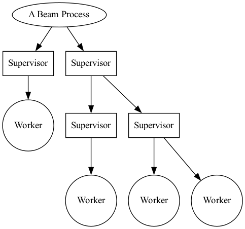
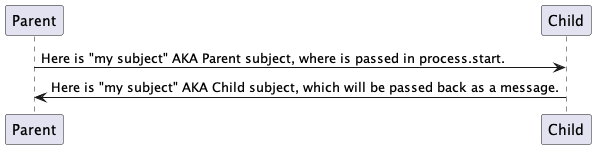

Gleam OTP Design Principles User's Guide
This document is a work in progress and will be updated as time permits.
Overview
The OTP design principles define how to structure Gleam code in terms of processes and modules.
Supervisor Tree
A fundamental idea of most BEAM based language is the ability to supervise a process, and be notified of its failure. This supervisory idea has roots in the erlang history and has become a well accepted method to deal with process failure.
There can be a heirachy of workers and supervisors, otherwise known as "the supervision tree".
Workers are processes that perform computations, that is they have work to do.
- A supervisor can monitor the behaviour of workers.
- A supervisor can restart aworker if something goes wrong.
- A worker can notify a superivsor if something goes wrong.
- A supervisor has different modes of dealing with worker failure.
Designing software that uses the supervision tree pattern can allow a developer to create highly resiliant software.
In the following figure, square boxes represents supervisors and circles represent workers:

Supervisors can supervise workers, and supervisors can supervise supervisors.
Simple Processes example.
Before understanding the worker/supervisor implementation, We should create a basic example of starting a 'process' and sending messages to it.
A process is not a OS level process, it is a 'thread' running within the single BEAM. virtual machine process. It doesn't come with the memory use and synchronization requirements that traditional operating sytem thread or processes require.
Starting a process.
A process can be started with "process.start", see the following:
import gleam/erlang/process ... let assert pid = process.start(running: start_process, linked: False)
The first parameter is the function to run within the newly spawned process. This function has no arguements and returns no finished value, I like to use start_process to set the initial state, then enter the main loop which will continue to deal with messages sent to this process.
The second parameter "linked: true", creates a "link" between two processes. If either of the proccesses participating ink a link terminates, it will send an exit message to the other participant. The exit message will contain the reason of the terminated participant.
In this simple example, there is no need to know if a process has terminated as no action will be taken. This is not a supervisor.
Sending messages
Gleam’s process requires type safety for both processes and messages. When sending messages between processes, the first step is to have a 'subject' which references the spawned process.
You can do this with process.new_subject, that makes a subject based in the current process context.
Subject is an opaque type. An opaque type is a type where the constructors of that type arent exposed to other modules that import the type. You must use the "new_subject" call to create a new subject.
If the "new_subject" call is made in a different process, it would have different contents.
let my_subject = process.new_subject()
This reference is used to message the process that created the subject. When a new process is started, unless a subject is created in this new process context and the subject messaged back to the parent process, the parent process will be unable to message the child.
As messages are strictly typed, you must create a Type that can encapsulate the needs of the data being sent to the process, including subject data being sent between them.
The example below shows a types used in both sending and receiving from this newly spawned process.
ChannelResponse type (from the new process)
pub type ChannelResponse { ChildSubject(Subject(ChannelRequest)) Allocated(id: Int) // additional message that the process can respond with. None // additional message that the process can respond with. }
and the ChannelRequest type (to the new process)
pub type ChannelRequest { Allocate Show Free(ChannelResponse) }
As stated earlier, to be able to send to the process a subject in the new process context will need to be sent to the parent process.
This message will need to be captured and used when making the request. Below is a sequence diagram showing the basics of starting processes.

After the "Child subject" has been received by the parent process, it can be used by the parent process or passed to another, however the typed messages to the child must remain consistent. The "Send" channel remains the same as long as the Child Process lives.
Messages can be set to a target subject with the 'process.send'. The example allocate below is a simple message of type "ChannelRequest" with no parameters. More complex data can be passed with more complex Types if required.
process.send(target, Allocate)
Listed below is a module (derived from its filename called "aserver" It is an example of a process sending a message to another process using the method described above.
It contains some more advanced functionality that we will touch on later.
import gleam/io import gleam/int import gleam/list import gleam/erlang/process.{Subject} import gleam/result import gleam/function import gleam/iterator.{iterate, take, to_list} pub type ChannelResponse { Allocated(id: Int) None ChildSubject(Subject(ChannelRequest)) } pub type ChannelRequest { Allocate Show Free(ChannelResponse) } pub fn alloc(target, mine ) { process.send(target, Allocate) let assert Ok(allocation) = process.receive(mine, within: 1000) allocation } pub fn free(target, mine, channel) { process.send(target, Free(channel)) } pub fn show(target, mine) { process.send(target, Show) } // generate a list of 100 channels for init. pub fn generate_channel_list() { iterate(1, fn(n) { 1+n }) |> take(100) |> to_list } pub fn main() { io.println("Hello from non_gen_server!") // similar to a channel between the process to start let my_subject = process.new_subject() let thing = fn() { init(my_subject)} // why do i block here ? let assert pid = process.start(running: thing, linked: True) // the channel from the child let assert ChildSubject(child_subject)= process.receive(my_subject, within: 100_000_000) |> result.unwrap(None) // show the default channels. show(child_subject, my_subject) // get three channels. let channel1 = alloc(child_subject, my_subject) let channel2 = alloc(child_subject, my_subject) let channel3 = alloc(child_subject, my_subject) // use the channels here. // use_channels(channel1, channel2, channel3) // show the free channel list: show(child_subject, my_subject) // return the channels, as we're done with them. free(child_subject, my_subject, channel1) free(child_subject, my_subject, channel2) free(child_subject, my_subject, channel3) // show the newly used list, they will be out of order. show(child_subject, my_subject) Ok(process.sleep_forever()) } pub fn init(parent_subject: Subject(ChannelResponse)) { // create another subject, that other processes can use // to address this new process. let my_subject = process.new_subject() // send the new subject back to the parent, using its subject. process.send(parent_subject, ChildSubject(my_subject)) // start the main process loop loop(my_subject, parent_subject, generate_channel_list()) } pub fn loop(my_subject: Subject(ChannelRequest), parent_subject: Subject(ChannelResponse), channels: List(Int)) { // add a selector to listen from parent process. let sel = process.new_selector() |> process.selecting(for: my_subject, mapping: function.identity ) // block forever on waiting for a message. let msg = process.select_forever(sel) let new_channels = case msg { Allocate() -> { // choose the first value, return rest for new state let [next_available, .. rest ] = channels process.send(parent_subject, Allocated(next_available)) io.debug("allocating channel " <> int.to_string(next_available) ) rest } Free(id) -> { let assert Allocated(channel) = id io.debug("Freeing channel: " <> int.to_string(channel)) list.append([channel], channels) } Show -> { io.debug("Available channels: !") io.debug(channels) channels } } loop(my_subject, parent_subject, new_channels) }
This produces output like
Gleam OTP
Gleam has its own library to simplify building programs using the actor model. The current status of the gleam library "experimental" however its been usable for some time.
Some of the OTP ideas from erlang are not implemented or do not cleanly map across to gleam, so they will be omitted. If they become feasible or sane at a later date, this document could be updated.
Simple process example as an 'actor'
Gleams actor implementation only runs on the erlang VM. Actors take advantage of the underlying beam vm concurrency features which allows communication via message passing of typed messages.
Each message is explicitly typed and tracable. The messages are received in a per-process mailbox and stored in the order in which they are received. Messages are stored in the mailbox until the process reads them or terminates.
Erlangs tools such as the Observer utility, can be used see the mailbox of each process.
Below we show an example of a basic process being started. It uses the similar mechanisms of using subjects for communiction but extracts it into labeled functions of 'init' and 'loop' functions.
The 'init' function sets up the state. The 'loop' function handles messages being sent to the 'actor' process.
import gleam/io import gleam/otp/actor import gleam/erlang/process import gleam/erlang pub fn main() { let parent_subject = process.new_subject() let actor = actor.start_spec(actor.Spec( init: fn() { let final = "message from init function" process.send(parent_subject, final) actor.Ready(0, process.new_selector()) }, init_timeout: 1000, loop: fn(msg, state) { io.debug(" IN CHILD: loop function triggered") io.debug(" IN CHILD: Message from parent in loop: " <> msg) actor.Continue(state) }, )) let assert Ok(actor_subject) = actor // get the message from the init function. let assert Ok(msg) = process.receive(parent_subject, 10) io.debug("IN PARENT: " <> msg) // send a message to the actor. process.send(actor_subject, "Hello from parent") let actor_pid = process.subject_owner(actor_subject) // send exit, is this out of band, not a standard message. process.send_exit(actor_pid) io.println("Press Ctrl-c a enter to exit.") Ok(process.sleep_forever()) }
The Worker
Gleam OTP formalises the "worker to supervisor specification"
The worker function requirement takes a function which returns a result or an error, and returns a childspec.
You can pass this on toa supervisor for.. supervision… joy.
pub fn worker(start: fn(a) -> Result(Subject(b), StartError)) -> ChildSpec( b, a, a )
let child = worker(fn(name) { actor.start_spec(actor.Spec( init: fn() { process.send(subject, #(name, process.self())) actor.Ready(name, process.new_selector()) }, init_timeout: 10, loop: fn(_msg, state) { actor.Continue(state) }, )) })
Describe its not .. anything but a process.
The supervisor
Loks almost exactly the same as the worker spec, wow.
Prepare a new supervisor type child.
pub fn supervisor(start: fn(a) -> Result(Subject(b), StartError)) -> ChildSpec( b, a, a )
pub fn add(children: Children(a), child_spec: ChildSpec(b, a, c)) -> Children(c)
Add a child to the collection of children of the supervisor
Round the ring
DESCRIBE RING DEMO HERE AND ADD SOURCE.
References: gleam otp source for supervisors.
Distribution
LINK UP EXAMPLE DISTRIBUTION LIBRARY HERE
Starting up nodes.
Setup example here.
Spawning a process on another node.
Finding processes on another node
Gleam process registry ?
Resources: todo
With thanks:
Thanks to :
- rawhat for helping out with debugging issues.
- McNimble for multiple fixes and encouragement.